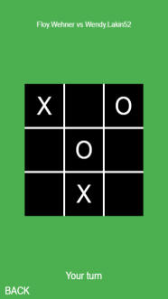
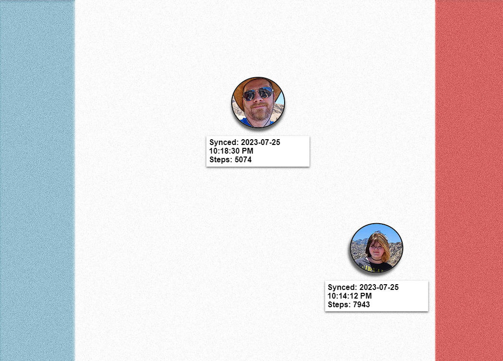
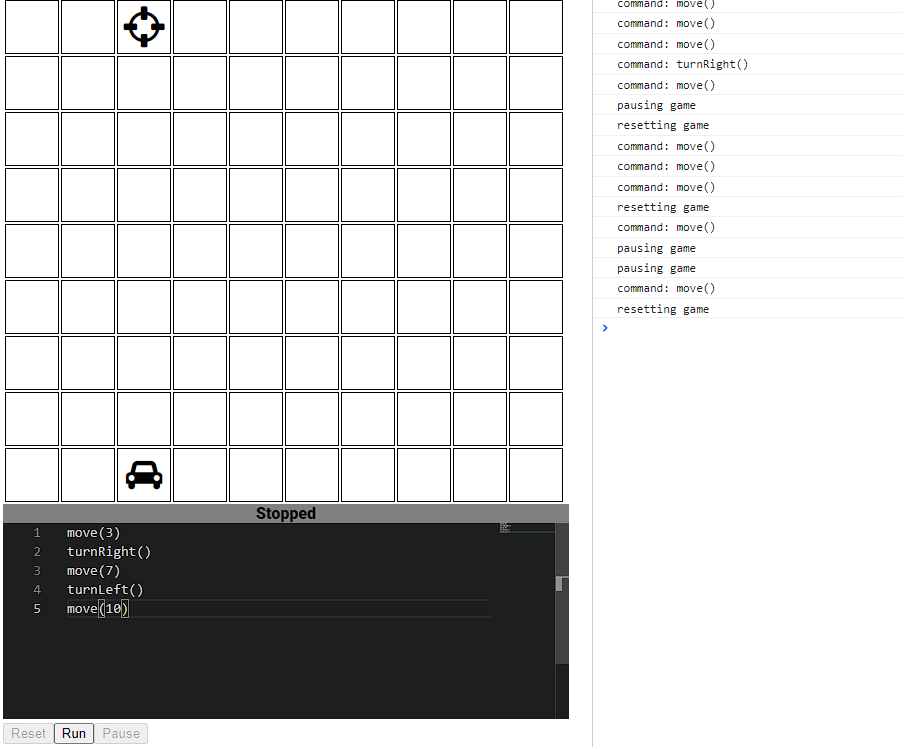
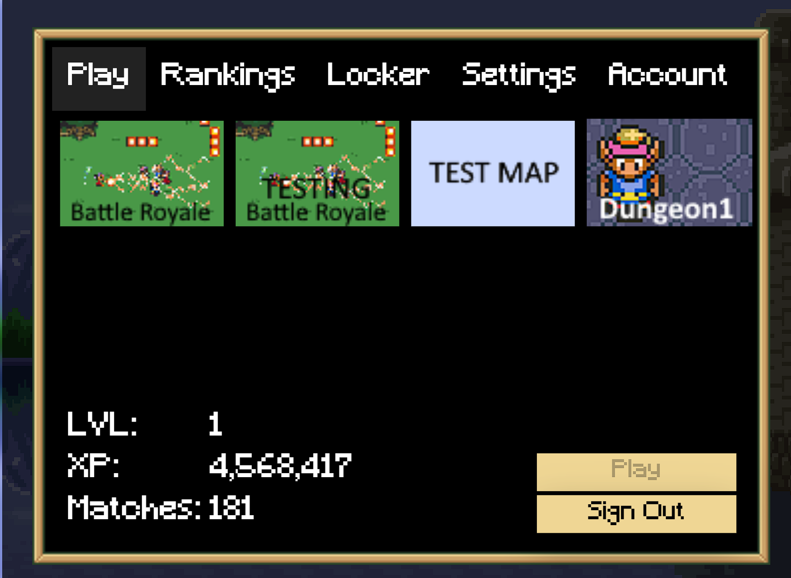
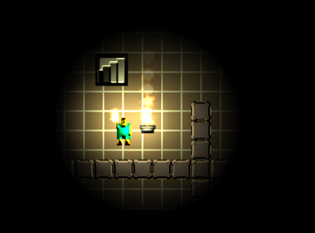
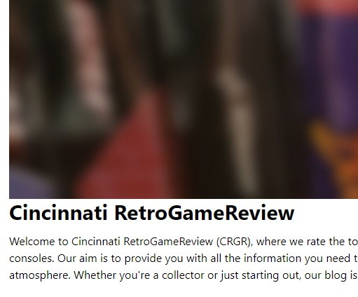

Collection of useless apps
TIC TAC TOE

Simple Tic Tac Toe game built with HTML, CSS, and
Javascript. Challenge your friend, play a stranger or
ever play against the computer. The computer is nearly
unbeatable! Good luck!
https://tic-tac-toe.natewilcox.io
FitRace

A web app that loads Fitbit steps from my daughter's and
my fitbit, displaying racing images based on step
counts.
https://race.natewilcox.io/
Code Path

I have developed a fun and educational app that teaches
programming to children. With this app, kids can guide a
car to its target location by selecting commands, such
as \"move forward\", \"turn left\" or \"turn right\".
The game requires logic and problem-solving skills as
players must navigate obstacles and avoid pitfalls to
reach their goal. Through this app, my daughter has
learned programming concepts such as loops, conditionals
and sequencing in a fun and interactive way. With its
colorful graphics, engaging gameplay and educational
benefits, this app is perfect for any child who wants to
learn the basics of programming.
https://codepath.natewilcox.io/
Open Source Battle Royale (Retired)

This online battle royale game brings together the
thrilling gameplay of a battle royale with the beloved
characters and art style of Legend of Zelda. Set in the
fantastical world of Hyrule, players battle it out to be
the last one standing using an array of weapons, items,
and abilities from the iconic franchise.
https://osbr.natewilcox.io (doesn't work anymore)
Dungeon Crawler

In Dungeon Crawler, players will take on the role of a
patient trying to escape a hospital before their torch
goes out. The game will be played in a top-down
perspective and will feature simple controls for
movement and limited combat options. Players will need
to navigate through the dungeon, avoiding enemies and
collecting loot along the way while keeping an eye on
their torch's remaining time. If the hero's torch runs
out of fuel, the hero will die as monsters lurking in
the shadows will attack.
https://dungeon-crawler.natewilcox.io/
Cincinnati Gamestore Review

This site is dedicated to reviewing retro game stores in
Cincinnati, Ohio, providing a valuable resource for
local gamers and collectors. Our passion for vintage
gaming led us to create this platform, which offers
unbiased reviews of various stores in the area. We aim
to provide a comprehensive overview of each store,
including their game selection, pricing, customer
service, and atmosphere, to help users make informed
decisions about where to shop.
https://cgr.natewilcox.io/